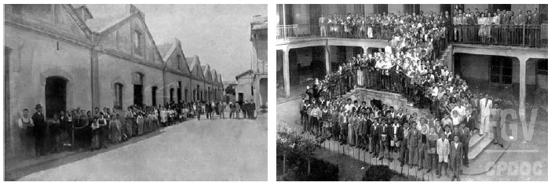

Como funcionou.

O Ministério de Educação e Saúde foi criado por meio da lei nº 378, em 1937, juntamente com o Departamento Nacional da Educação, que era estruturado em oito divisões de ensino: primário, industrial, comercial, doméstico, secundário, superior, extraescolar e educação física. Durante esse período, a Divisão do Ensino Industrial foi implantada, e as Escolas de Aprendizes Artífices foram transformadas em Liceus, dedicados ao ensino profissional em diversos ramos e graus.
Consequentemente, a escola de São Paulo, conhecida como "Liceu Industrial de São Paulo", no período de 1937 a 1942, foi liderada por Glicério Rodrigues Filho e Francisco da Costa Guimarães (que já havia sido diretor quando era Escola de Aprendizes Artífices), sendo este último envolvido na transição em 1942. No contexto da educação profissional em São Paulo, tanto o Liceu Industrial de São Paulo quanto o Liceu de Artes e Ofícios buscavam atender ao crescimento e à diversificação da produção industrial-manufatureira. Os dirigentes das escolas profissionais muitas vezes assumiam papéis políticos partidários, visando exercer funções públicas. Os conflitos entre diferentes projetos educacionais das elites paulistas resultaram na integração entre as atividades do ensino superior para engenheiros e do ensino profissional para os operários. Detalhado na reforma educacional de 1934, o objetivo era formar operários em tempo reduzido, tornando-os trabalhadores especializados e conscientes da disciplina mental e social adequada ao ambiente industrial e ao próprio operário. Houve uma atenção especial aos aspectos disciplinares, com ênfase nas normas de asseio, higiene e compostura moral. Os alunos eram submetidos a regras rigorosas, como a proibição de tempo livre, consumo de álcool e tabaco, leitura de jornais e outros textos nas instalações, bem como a discussão de questões políticas, sociais e religiosas.
Os Liceus funcionavam de maneira semelhante a manufaturas, envolvendo tanto a fabricação quanto o comércio da produção. A Lei nº 378 também propôs a expansão do ensino profissional no país, incluindo a criação de novos Liceus, tanto na rede pública quanto na privada. Em 1937, ano da criação dos Liceus Industriais, o presidente Getúlio Vargas promulgou uma nova constituição e fechou o Congresso Nacional, instituindo o Estado Novo. Vargas buscou apoio popular, implementando leis trabalhistas e impulsionando a industrialização durante a Era Vargas, que perdurou até 1945. Três anos antes, em 1942, os Liceus foram transformados em Escolas Técnicas Industriais.
Diretores
Os diretores durante esse período foram Glicério Rodrigues Filho e Francisco da Costa Guimarães.
Glicério Rodrigues Filho (Jan.1937 à Set.1939)
Francisco da Costa Guimarães (Set.1939 à Ago.1942)